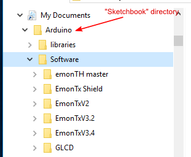

OK I have put together my Emon TX shield and connected to my Arduino. I've followed the steps setting up the Arduino environment, I've downloaded all the Libraries listed,unzipped and put in a seperate folder name OEM, rather than the Arduino library as advised. I've then downloaded the Emon TX firmware, unzipped it and located it in the Arduino sketches folder. I've open the folder and opened the CT1234_voltage sketch, its opened ok and is also showing the additional tab labeled emonlib. I clicked the verify and its stops with the following error.
emonTxShield\Shield_CT1234_Voltage\Shield_CT1234_Voltage.ino:54:73: fatal error: JeeLib.h:
No such file or directory
#include <JeeLib.h> // make sure V12 (latest) is used if using RFM69CW
^
compilation terminated.
exit status 1
Error compiling.
I've tried google it seems others have come across this issue but I can't find the answer. I plan to use the setup for pv diversion and monitoring once I have the basics sorted. Im planning on using ethernet card and have no rf if that makes a difference.
Steve
Re: Problem whilst verifying Emon TX sketch on Arduino, fatal error: JeeLib.h: No such file or directory
Jeelib is a separate library which is required by the RFM12B and RF69 radio modules. Unless this one is in place, compilation will fail because the file JeeLib.h can't be found. You will need to download and install this library.
The attached copy is OK for my needs but may not be the latest version. The unzipped folder needs to sit alongside all the other main libraries. After installing it, the IDE needs to be closed for the change to take effect.
Hope this helps.
Re: Problem whilst verifying Emon TX sketch on Arduino, fatal error: JeeLib.h: No such file or directory
thanks for the response. I had already downloaded jeelib but have tried the link you suggested incase there was something different. I've unzipped the folder and placed it alongside my other librarys. I've restarted the IDE and opened the emox tx sketch, clicked verify and i'm getting the same error message. I've spent most the afternoon trying to get past this stage and am stuck.
Re: Problem whilst verifying Emon TX sketch on Arduino, fatal error: JeeLib.h: No such file or directory
see photo.
Re: Problem whilst verifying Emon TX sketch on Arduino, fatal error: JeeLib.h: No such file or directory
What version IDE have you installed?
If it is later than ~v1.6.2 you cannot use the additional level of folders. The abc.h and abc.ccp files and examples folder etc must be in sketchbook/libraries/abc as sketchbook/libraries/anythingelse/abc will fail to be located by the IDE.
Try moving one of your library folders from your "OEM" folder directly into the libraries folder to see if that works (restart of IDE required). You can confirm the lib is detected by checking if menu => Sketch => Include Library has the lib listed at the bottom (no need to select it just confirm if it's there or not)
Paul
Re: Problem whilst verifying Emon TX sketch on Arduino, fatal error: JeeLib.h: No such file or directory
pb66: You can confirm the lib is detected by checking if menu => Sketch => Include Library has the lib listed at the bottom (no need to select it just confirm if it's there or not)
Neat, I've never tried that one :-)
Re: Problem whilst verifying Emon TX sketch on Arduino, fatal error: JeeLib.h: No such file or directory
Hi Paul, thanks for the advise. I got to a point where I could see the the librarys under the library tab, but i was still getting the no jeelib.h file found error.
In the end I uninstalled Arduino and reinstalled version 1.0.5
Im still getting errors which I dont understand.
Am I even clicking on the correct sketch for what I require, i've been selectrion CT1,2,3,4_voltage? one also has nanodeRF, and one also says serial only? I am not using any RF I eventually want to plug a wifi shield in.
Re: Problem whilst verifying Emon TX sketch on Arduino, fatal error: JeeLib.h: No such file or directory
Just reading back through since I am not using any RF should it be trying to locate this file? Maybe the sketch I need to run is the serial only version?
Re: Problem whilst verifying Emon TX sketch on Arduino, fatal error: JeeLib.h: No such file or directory
It sounds like you could probably use a different sketch if you don't need JeeLib for RF, I'm not familiar with the emonLib examples or using the wi-fi shield so I won't comment on which sketch is the better for your needs.
The comments I made above are aimed at the very latest IDE versions as they have changed, if using 1.0.5 you can ignore pretty much all I said and the guides should work as they are tried and tested with the version you are using.
If you can see the Lib under the file => sketchbook => libraries menu and still it isn't found then the usual suspests are that the IDE hasn't been restarted since the libs appeared in the right location, this involves shutting down all instances of the IDE, if one remains open it will not reload the libs. Or the folder is not named correctly, from memory the JeeLib folder unzips with the name "jeelib-master" this must be renamed to "jeelib" or it will not be recognized as a lib even if the IDE(s) are restarted and also if there are more than one copy of jeelib "seen" by the IDE it will not list more than 1 but it will have difficulties using the lib, either it won't know which to use or possibly even try and use the wrong one which may not be valid.
Although you may not need jeelib the chances are you will need other libs at some point (wi-fi perhaps?) so cracking this will be useful, the only "quirk" with jeelib specifically is the downloaded folder name, also worth checking when you are unzipping that you are not adding a folder there and ending up with jeelib/jeelib-master/JeeLib.h etc it must be jeelib/JeeLib.h etc as in Robin's own version.
Paul
Re: Problem whilst verifying Emon TX sketch on Arduino, fatal error: JeeLib.h: No such file or directory
Last night, I downloaded Arduino V1.6.7 into a copy of Win 10 running on a virtual machine, and despite putting the libraries exactly where the Arduino documentation requires (which has changed since our guide was written, which was for V1.0.5), I too got exactly the same error message. So I am beginning to think that V1.6.7 is broken. I shall do some more investigation later today. Just for information, V1.0.5 is still the latest version in the Ubuntu software centre.
If you (saggers) are still having problems with libraries, Paul is correct and some do need the names changed. I think our guide shows the correct names.
Also, if you use a sketch that sends commands to the radio but you do not have a radio fitted, the sketch will hang at that point and lock up. So you need to use the 'serial only' version "Shield_CT1234_Voltage_SerialOnly". If you use (or convert) any other sketch, then you must remove all the radio commands.
Re: Problem whilst verifying Emon TX sketch on Arduino, fatal error: JeeLib.h: No such file or directory
I think I know what the problem is - a failure of the Arduino documentation. What is not made clear is the directory (folder) which it calls "Sketchbook" must be the parent of both the user's top level sketch directory and the "libraries" directory. This can be (but need not be) the "Arduino" directory.
This shows the structure you need for the libraries to be found:

Re: Problem whilst verifying Emon TX sketch on Arduino, fatal error: JeeLib.h: No such file or directory
Ah ha you are right the default folder name has changed, although the IDE always refers to it as "Sketchbook" the later version creates and uses the Arduino folder as it's "Sketchbook" where as earlier versions actually created and used a folder named Sketchbook for it's "Sketchbook" well spotted. That confuses things unnecessarily, not only from this angle but also from the fact that it is well established that the boards.txt, programmers.txt, bootloaders and avrdude files are usually all found under the "Arduino" directory.
It's worth noting in both cases the "Sketchbook" folder can be defined in the preferences. It may well be worth considering changing the preferences to Sketchbook and rename the Arduino "Sketchbook" folder to avoid future confusion, I think that is the route I will take.
And for clarification if you are using v1.0.5 it is likely to still be Sketchbook so this might not be the reason it can't find JeeLib.h.
Paul
Re: Problem whilst verifying Emon TX sketch on Arduino, fatal error: JeeLib.h: No such file or directory
I've never managed to understand the Arduino design mentality. Until the Arduino appeared (and everywhere else since as well) there's been a default location for libraries but it is perfectly permissible to put a library anywhere, provided its path is specified in the "include". This is why K&R distinguish between #include < ... > and #include " ... ". I've just rewritten the installation instructions. I've pointed out there that the "Sketchbook" directory is by default called "Arduino", but it can be a name of the user's choice. What HAS changed significantly is the relative positions in the hierarchy of "Sketchbook", the libraries and the user's sketches.